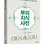

"소름돋네..." Ai 컨닝 난리 통에 대치동맘이 잠잠한 이유라는데

세 줄로 읽기
기존 감독관 7.5만명 + 8,400명 추가배치 모든 수험생 안경, 웃긴, 단추, 시계 검사 재난문자 발송 (시험중) 미제출 전화 적발용 부정행위시 응시제한 10년 (기존 1년임) 여기에 교육부에서는 하루 전날인 오늘 필기구는 오로지 흑색 연필만 허용한다고 발표 했습니다.
와 진짜 실시간으로 버라이어티하게 돌아가네요..
일단 국무총리가 대국민 담화까지 발표했습니다.
원문 문장에서 고른 요약입니다. 숫자와 사실은 원문에서 다시 확인하세요.
핵심 포인트
- 1각종 루머 생성을 막고, 분위기를 수그러뜨리기 위함인데, 일단 정부의 대처를 요약하면 아래와 같습니다.
- 2텔레를 중심으로 난리 난 루머인데, 지금과 같은 ai 컨닝 난리통에 제일 억울해 하고 화내야 될 대치동 맘들이 잠잠하다는 겁니다.
이 블로거의 최근 글
- 가격 하락의 시작 "메모리 반도체는 끝났다" By 트렌드포스
- 내가 가난한 동네에 산다는 증거
- SK 하이닉스 313만원 간다고? "증권사 목표 주가의 허상"
- "오죽하면 위장이혼?" 부부라서 3,357만원 깎이는 기초연금 금액
- 아시아나 인수만이 아니네... "대한민국 하늘 다 먹은" 대한항공
같은 분류의 다른 글
- 12월 1주 차 주식 생각
- GTX C노선 어디 지날까? 개통은 언제? 호재지역은
- 변압기 스터디
- 건강보험자격득실확인서 발급방법, PDF 저장까지 3분만에 끝!
- 서울시 청년월세지원 3차 지급일 날짜 언제? 이때입니다
공개 페이지에는 짧은 소개와 원문 링크만 있습니다. 원문 전문은 올리지 않습니다.